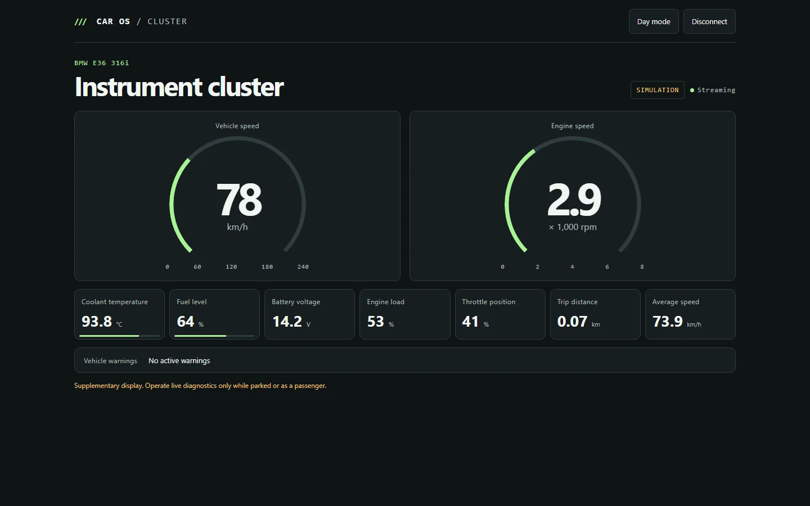
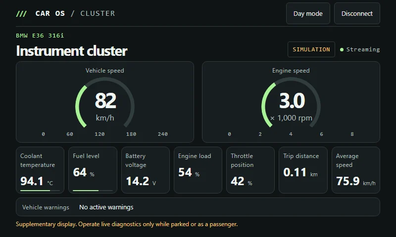

Engineering project · Runtime screenshot
Car OS Dashboard
Follow a live simulated E36 drive cycle with streamed instruments, theme controls and connection recovery.
Local portfolio demo
Public source access pending.
Run the local demo
From the prepared project checkout, run these commands and open the address printed by the server. The repository may require access.
cd car-os-dashboard
uv sync --locked --python 3.13
npm --prefix frontend ci
uv run --locked python -m uvicorn backend.main:app
# In a second terminal: npm --prefix frontend run dev

Problem
A supplementary automotive display needs clear telemetry freshness and a repeatable way to test unavailable sensor data.
Architecture
FastAPI owns the simulated drive cycle and trip calculations. React validates versioned WebSocket frames, and Vite proxies the local API and stream. Pydantic validates source samples.
Engineering decisions
- Share one telemetry source interface between the simulator and future read-only adapters.
- Represent unknown channels as nullable values and hide stale readings after a timeout.
Implemented workflow
- Connect to the simulated drive cycle and inspect changing speed, RPM and trip distance.
- Switch day mode and observe the simulated coolant warning.
- Disconnect, inspect unavailable readings and reconnect.
Checks and evidence
Prepared application screenshots and the source README document this workflow. Application checks were not rerun during this portfolio update.
- Reviewed the source README and prepared screenshots in project-2026 on 25 November 2026.
Scope and next steps
- The release is a loopback-only simulator, with no verified physical adapter or vehicle acquisition.
- The touchscreen capture is a browser viewport, not evidence of hardware testing.
- Diagnostics, navigation and persisted history are outside this release.
Technology
React · TypeScript · FastAPI · WebSocket · Python
Preview availability
Screenshots show the prepared local version. Hosted demos remain pending, and source access may require permission. Local setup requirements and remaining limits are documented above.
← Return to portfolio